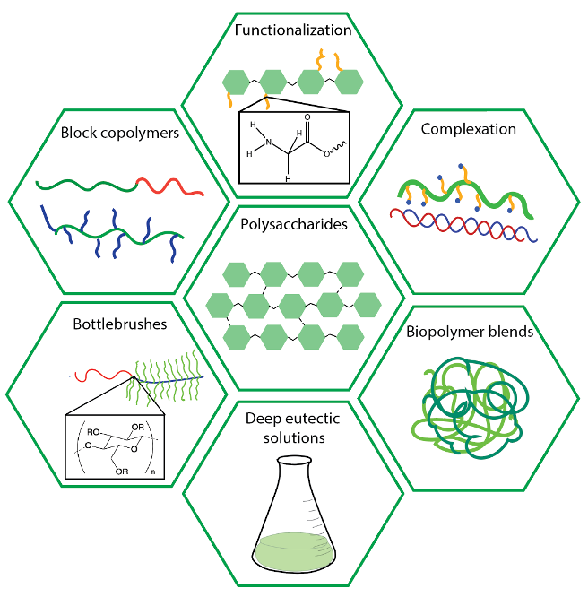

About Us
Welcome to our research group, where we are dedicated to the development of cutting-edge sustainable polymers and block copolymers sourced from natural materials.
Our primary focus lies in unraveling the intricate structural-property relationships inherent in these materials. At the heart of our research endeavors is the fusion of chemical synthesis techniques with state-of-the-art characterization methodologies.
Through meticulous design and synthesis, we aim to engineer polymers with exceptional properties, poised to revolutionize various industrial sectors. Simultaneously, our efforts contribute to advancing the fundamental understanding of polymeric systems.
We employ a comprehensive suite of molecular, structural, and mechanical characterization tools to understand and develop the relations between molecular architecture, nanostructure, and macroscopic behavior.
By elucidating these connections, we pave the way for tailored material design and enhanced performance across diverse applications.
We are currently working on the following projects in our group:
Development and understanding of novel polysaccharide-based polymer systems.
Polysaccharide-based bottlebrush polymers and block copolymers.
Direct elucidation of polymer structural development, phase transitions, and dynamics.
Join us on our journey as we push the boundaries of polymer science, driven by the pursuit of sustainability, innovation, and excellence.

Team
Principle Investigator

Lucy Liberman Solomon (
CV)
Email:
lucylib@technion.ac.il
Lucy is an assistant professor of Chemical Engineering
at the Technion - Israel Institute of Technology since March 2023. Previously she was a postdoctoral researcher at
University of Minnesota working
with
Frank Bates and
Tim Lodge.
She received her PhD in Chemical Engineering from the Technion - Israel Institute of Technology advised by
Ishi Talmon in
2019. Lucy recieved her BSc in Chemical Engineering from the Technion in 2013.
Lab Manager

Inbar Haya Magid-Gold
Email:
inbarm@technion.ac.il
Inbar completed her BSc in Chemical Engineering Inbar Joined the Liberman lab in 2023,
and is enthusiastic to take part, help, and contribute to the various exciting projects in the lab.
Undergraduate Students

Hila-Leah Mann
Email:
hilab@campus.technion.ac.il
Hila is a fourth year Chemical Engineering student at the Technion.
She joined the group because she is interested in the field of polymer science. Outside of work, she likes to
Publications
 * denotes equal contribution
* denotes equal contribution
- Drug-Polymer Nanodroplet Formation and Morphology Drives Solubility Enhancement of GDC-0810
.
K. E. Barr, M. L. Ohnsorg,L. Liberman, L. G. Corcoran, A. Sarode, K. Nagapudi, C. R. Feder, F. S. Bates, T. M. Reineke, Bioconjugate Chemistry , (2024), Accepted
.
Teaching:
Outreach:
Equity & Inclusion:
News

Close
Contact
Email:
Address: